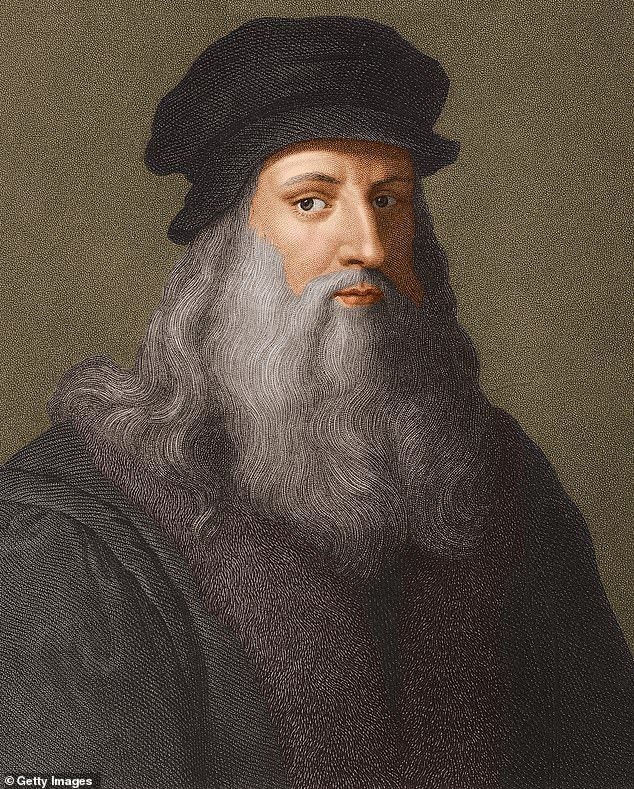
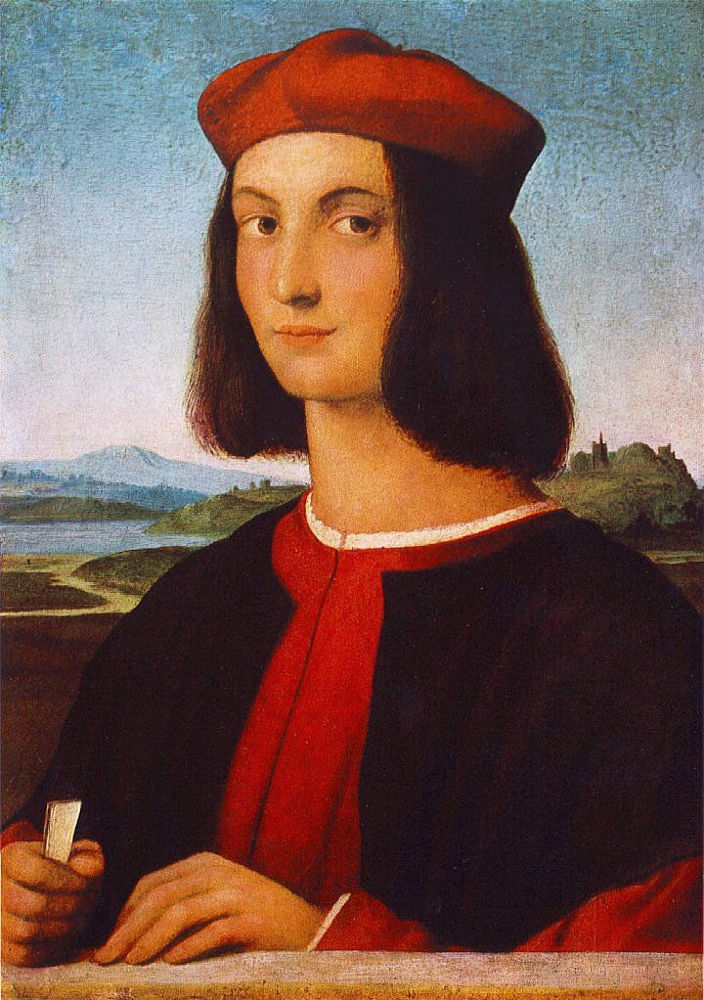

Artistas
As principais noticias no Mundo da Arte
Você sabe qual a importância da pintura "A ciação de Adão" pintada na capela sistina por Michelangelo?
Michelangelo Buonarroti (1475-1564) foi um dos maiores artistas do Renascimento italiano e uma das figuras mais influentes da história da arte ocidental. Nascido em Caprese, na Itália, ele se destacou em diversas áreas, incluindo escultura, pintura, arquitetura e poesia.Michelangelo também teve uma carreira multifacetada, sendo reconhecido por seu gênio criativo e inovação artística. Ele também foi uma figura importante no contexto das ideias humanistas da época e teve uma abordagem muito pessoal e intensa em sua arte, que refletia tanto sua visão religiosa quanto sua busca pela perfeição técnica e estética. Michelangelo morreu aos 88 anos, deixando um legado artístico imenso que ainda influencia o mundo da arte até hoje.

Sera que você sabe de todos os significados por tras da pintura "Monalisa"?
Leonardo da Vinci (1452-1519) foi um dos maiores gênios do Renascimento, destacando-se como pintor, inventor, cientista, engenheiro, anatomista e muito mais. Ele é famoso por obras-primas como Mona Lisa e A Última Ceia, além de seus cadernos repletos de esboços e anotações sobre anatomia, máquinas voadoras, engenharia e astronomia. Sua curiosidade insaciável e habilidades multidisciplinares fazem dele um dos maiores símbolos da criatividade e inovação humana.

Aposto que você não sabia que essa pintura era dele.
Rafael Sanzio (1483–1520) foi um pintor e arquiteto do Renascimento italiano, conhecido por suas obras harmoniosas e equilibradas. Destacou-se por sua técnica refinada, cores vibrantes e composições simétricas. Trabalhou para papas em Roma, sendo responsável por afrescos no Vaticano, incluindo A Escola de Atenas. Suas Madonas são exemplos de delicadeza e perfeição estética. Morreu jovem, aos 37 anos, mas seu legado influenciou a arte ocidental por séculos.
Rafael Sanzio
Rafael Sanzio (1483–1520) foi um dos grandes mestres do Renascimento italiano, conhecido por suas pinturas harmoniosas, elegantes e equilibradas. Nascido em Urbino, destacou-se desde jovem e rapidamente ganhou reconhecimento em Florença e Roma. Sua arte combinava a precisão de Leonardo da Vinci com a grandiosidade de Michelangelo, resultando em composições suaves e expressivas. Trabalhou para papas e nobres, sendo famoso por suas Madonas e pela icônica Escola de Atenas, uma das obras-primas dos afrescos do Vaticano. Rafael morreu jovem, aos 37 anos, mas deixou um legado artístico que influenciou gerações futuras..
Sera que você sabe de todos os significados por tras da pintura "Monalisa"?
Leonardo da Vinci (1452-1519) foi um dos maiores gênios do Renascimento, destacando-se como pintor, inventor, cientista, engenheiro, anatomista e muito mais. Ele é famoso por obras-primas como Mona Lisa e A Última Ceia, além de seus cadernos repletos de esboços e anotações sobre anatomia, máquinas voadoras, engenharia e astronomia. Sua curiosidade insaciável e habilidades multidisciplinares fazem dele um dos maiores símbolos da criatividade e inovação humana.
Sera que você sabe de todos os significados por tras da pintura "Monalisa"?
Leonardo da Vinci (1452-1519) foi um dos maiores gênios do Renascimento, destacando-se como pintor, inventor, cientista, engenheiro, anatomista e muito mais. Ele é famoso por obras-primas como Mona Lisa e A Última Ceia, além de seus cadernos repletos de esboços e anotações sobre anatomia, máquinas voadoras, engenharia e astronomia. Sua curiosidade insaciável e habilidades multidisciplinares fazem dele um dos maiores símbolos da criatividade e inovação humana.
Rafael Sanzio
Rafael Sanzio (1483–1520) foi um dos grandes mestres do Renascimento italiano, conhecido por suas pinturas harmoniosas, elegantes e equilibradas. Nascido em Urbino, destacou-se desde jovem e rapidamente ganhou reconhecimento em Florença e Roma. Sua arte combinava a precisão de Leonardo da Vinci com a grandiosidade de Michelangelo, resultando em composições suaves e expressivas. Trabalhou para papas e nobres, sendo famoso por suas Madonas e pela icônica Escola de Atenas, uma das obras-primas dos afrescos do Vaticano. Rafael morreu jovem, aos 37 anos, mas deixou um legado artístico que influenciou gerações futuras..